Hey
Hanu
Upcoming visit
Helper assigned
24 OCT
Hedgewar hospital
Dr Ranjana Deshmukh

Reason
Monthly follow up appointment
Maa’s BP is above target

138/86 vs 130/80 target · consider calling her today
BP
138/86mmHg
Target
130/80
Movement
2340Steps
Sugar
118mg/dL
Target
80-130
Creatinine
1.0mg/dL
Target
0.7-1.3
Medicine log
Taken
Missed
Not yet
D
L
B
Mon
Tue
Wed
Thu
Fri
Sat
Sun